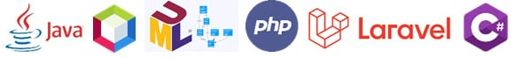
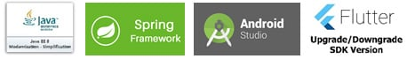

About Me
Photo of me:
Cuộc sống thay đổi từng ngày. Bạn thích ứng với nó
Some Links
Tôi sẽ link đến một vài câu lạc bóng đá mà tôi yêu thích
Giới thiệu về khóa học lập trình tại FPT Aptech
Học lập trình viên quốc tế

Thế giới Lập trình đã và đang chào đón đón một thế hệ Centennial (GenZ), tràn đầy sự tự tin, đặc biệt giỏi công nghệ, sở hữu lợi thế có khả năng tiếp cận thông tin dễ dàng, nhanh chóng. Bạn cũng muốn trở thành một GenZ năng động, sở hữu công việc có mức lương hấp dẫn, tương lai rộng mở, và khó bão hòa trong tương lai? Bạn muốn tự tay Lập trình nên những website, phần mềm, ứng dụng, game ấn tượng? Tìm hiểu chương trình học Lập trình viên quốc tế tại FPT Aptech để bắt kịp xu thế ngay hôm nay!
NỘI DUNG CHƯƠNG TRÌNH HỌC
HỌC KỲ I
Thiết kế web chuyên nghiệp & phân tích thiết kế hệ thống cơ sở dữ liệu
Học các kỹ năng thiết kế và xây dựng website tương tác chuyên nghiệp cho các hệ thống thương mại điện tử, các doanh nghiệp…v.v kết hợp với các framework phổ biến nhất hiện nay: Bootstrap, Jquery. Tương tác hiển thị trên các platform khác nhau: desktop, mobile, tablet. Trang bị kỹ năng phân tích, thiết kế cơ sở dữ liệu, chuẩn hóa dữ liệu thô để tổ chức các bảng dữ liệu trong môi trường SQL Server 2016.
HỌC KỲ II
Lập trình hướng đối tượng với ngôn ngữ JavaSE, C#, PHP & phân tích hệ thống thông tin.
Lập trình hướng đối tượng với ngôn ngữ JavaSE, C#, PHP & phân tích hệ thống thông tin. Học các kỹ năng lập trình chuyên sâu với hai ngôn ngữ lập trình hướng đối tượng được sử dụng nhiều nhất trên thế giới là Java và C#. Viết thành thạo các phần mềm ứng dụng bằng JavaSE. Tiếp đó là phát triển website động chuyên nghiệp với công nghệ PHP & MySQL. Ngoài ra, sinh viên còn được trang bị các công cụ, mô hình để phân tích chức năng và yêu cầu của hệ thống thông tin.
HỌC KỲ III
Chuyên sâu về công nghệ .NET và các kỹ thuật phân tích thiết kế phần mềm
Tiếp cận đầy đủ công nghệ hàng đầu của Microsoft, đi sâu vào cấu trúc lập trình bên trong của desktop/web/enterprise application. Bên cạnh đó, sinh viên còn được trang bị kiến thức, kỹ năng, kỹ thuật chuyên sâu trong phân tích, thiết kế và phát triển dự án phần mềm.
HỌC KỲ IV
Chuyên sâu về công nghệ JAVA. Lập trình ứng dụng di động
Học cách thiết kế, phát triển và triển khai các web/enterprise application một cách thuần thục trên công nghệ JAVAEE, lập trình thành thạo ứng dụng cho đa nền tảng (iOS và Android). Trong học kỳ này, còn cung cấp cho người học kỹ năng thực tế cần thiết để bảo mật hệ thống mạng, kỹ thuật mã hóa an toàn thông tin dữ liệu..